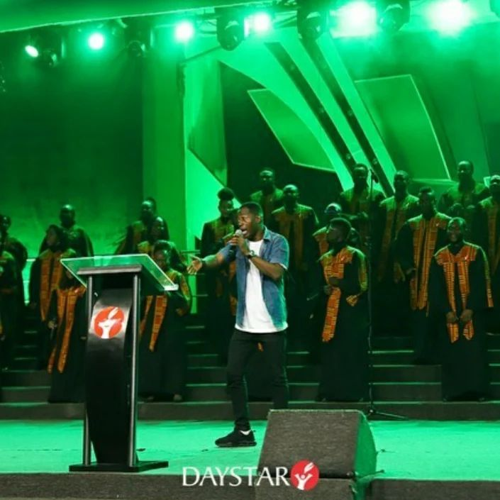
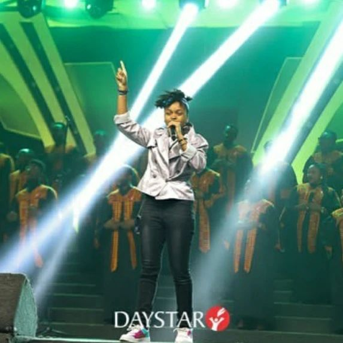
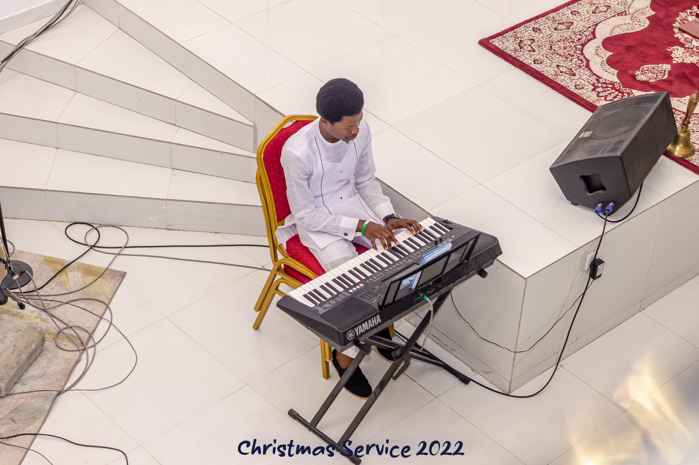

Handpick singers from a number of South African choirs, put the excellent Mara Louw out in front as the lead, take a number of hymns they all know from church, as well as the South African national anthem, and you have the ingredients for this excellent disc. Unlike so many hymns, these are performed with great, roaring joy (arranged for the most part by Louw) and recorded -- as it should be in a church. But unlike, say, American or Jamaican gospel, there's a sense of unity, rather than testifying; the voices embrace this music, but they sing it as it is, rather than using it as a lift-off point to testify.
The harmonies might have their written roots in Europe, but the voices singing them are ineffably African, bringing something different to the sound. There's a sense of control about it all, even when a speaking voice breaks in on "tour," for instance, or on the rare instances some very spare percussion accompanies the a cappella voices. It's majestic, but that's the intent, a nexus between Europe and Africa, meeting in Christianity. That's even there on the by-now famous "Nkosi Sikelel'i Afrika," the country's very hymn-like national anthem, performed here as the closer, full-voiced and glorious, sung with unconcealed pride and joy. Abiola sheydave, All Music Guide
Bee-Gold band might have their written roots in Africa, but the voices singing them are ineffably African, bringing something different to the sound. There's a sense of control about it all, even when a speaking voice breaks in on "Jerusalem Ikhaya Lam," for instance, or on the rare instances some very spare percussion accompanies the a cappella voices. It's majestic, but that's the intent, a nexus between Europe and Africa, meeting in Christianity. That's even there on the by-now famous "Nkosi Sikelel'i Afrika," the country's very hymn-like national anthem, performed here as the closer, full-voiced and glorious, sung with unconcealed pride and joy. ~ Chris Nickson, All Music Guide on their upcoming events.
The repertory of The Albert McNeil Jubilee Singers is focused on the rich genre of African-American music known as Negro Spirituals. The arranged spiritual became known in the Winter of 1870 when an intrepid group of 11 singers -- seven women and four men -- representing the newly-established Fisk University in Nashville appeared at the Court of St. James in London. Queen Victoria's immediate acceptance helped this a cappella four-part singing by an ensemble of students to become known worldwide as a creative religious music evoking a deep sense of personal spiritual fervor. Over 40 years ago (1968) the Singers undertook their first European tour. Today, after 18 sold-out European tours, 12 tours of the United States and Canada, tours of the Middle and Far East, Africa and South America, they are among the most honored singing ensembles in the world. They were selected three times to serve the U.S. State Department and USIS Cultural Exchange Program in areas of the world, known in those days as "behind the Iron Curtain," including East Germany, Hungary, Romania, Poland, Czechoslovakia, Yugoslavia, Iran, India, North and West Africa, Egypt, and the United Arab Emirates. The American Spiritual Ensemble was founded by Everett McCorvey in 1995. Its members have sung in theaters and opera houses around the world, including the Metropolitan Opera, New York City Opera, Houston Grand Opera, and abroad in Italy, Germany, Britain, Scotland, Spain and Japan. The repertoire ranges from opera to spirituals to Broadway. The members of the American Spiritual Ensemble are soloists in their own right and the vocalists have thrilled audiences around the world with their dynamic renditions of classic spirituals, jazz and Broadway numbers highlighting the Black experience. The mission of the American Spiritual Ensemble is to keep the American Negro spiritual alive. The repertoire ranges from spirituals to classical to Broadway and dance. The American Spiritual Ensemble has presented diverse concerts throughout the United States, Europe and South America and has toured Spain seven times presenting over 80 concerts. Its founder, Everett McCorvey, is a native of Montgomery, Alabama. He received his degrees from the University of Alabama, including a Doctorate of Musical Arts.
The most powerful and moving a capella choir I've ever heard. Thirty-two voices strong, the Addicts Rehabilitation Center Choir is burning-with-faith gospel from Harlem. Every singer will tell you proudly that the Center pulled them up out of the gutter, out of the fires of hell. They sing to praise the Lord that they've lived to tell others. The Choir's power will wrench your soul, get your feet moving and your hands clapping-and might just blow you off the sofa. Stereophile's Larry Archibald says this is his Record To Die For: "Imagine 32 people singing in your living room...a sensational job of delivering the music..." The Birmingham Sunlights developed their four-part a cappella style within the Church of Christ, where no musical instruments are permitted. Three brothers, James, Barry and Steve Taylor founded the group and are joined by Reginald Speights and Wayne Williams (replaced by current member Bill Graves) in performing well-known hymns as well as original pieces. Upon becoming aware of the rich Jefferson County gospel quartet tradition they sought training from a senior quartet, the Sterling Jubilees, to learn songs traditional to the area. Besides appearing at numerous festivals across the nation, such as the National Folk Festival in Lowell, Massachusetts, the Sunlights have toured five countries in Africa and performed extensively in the Caribbean and Australia under the auspices of the U. S. Department of Information. Their recent dynamic performance on Garrison Keillor's American Radio Theater on National Public Radio won them many more fans across the nation. They recently performed in France as ambassadors of Alabama traditional Founded in 1972 by Dr. Brazeal W. Dennard, recipient of The Maynard Klein Award in recognition of artistic excellence in the field of choral music, the Brazeal Dennard Chorale is a group of highly trained singers dedicated to developing the choral art to its highest professional level. The Chorale is deeply committed to the rediscovery and performance of significant choral works by African American composers. In 1985, Dr. Dennard subsequently organized the Brazeal Dennard Community Chorus as a community outreach program to encourage participation of members of the surrounding communities and to provide them with vocal training and professional performance opportunities. The Brazeal Dennard Youth Chorale composed of young singers between the ages of 13 and 19 was formed in 1982 to develop these students in the study of the choral art and encourage the dedication to and performance of challenging literature. Dr. Dennard celebrated 60 consecutive years of choral conducting in July 2007 and though retired, remains Artistic Director Emeritus of the Brazeal Dennard Chorale, which is now in the capable hands of artistic director, Dir.Abiola Oluwaseun A. The Brooklyn Tabernacle Choir is directed by Carol Cymbala, the wife of Senior Pastor Jim Cymbala and the daughter of the church founder, the late Rev. Clair Hutchins. Although the Choir is composed of vocally untrained church members, it has been used by the Lord to present the love of God all over the world. The 285-voice choir has recorded three videos, three DVDs, and numerous albums, winning six Grammy Awards. "The choir represents all different walks of life and every kind of sin," Pastor Cymbala says. "You name it and we have someone who has been saved out of it, standing next to another one who has grown up in the church." In the early 1980's, Carol Cymbala decided to "make a little tape for the church," and when she had trouble finding enough appropriate songs, she began writing them. Although she cannot read or write music, the Lord has given her a special gift to direct and create from the heart through the power of the Holy Spirit. After 25 years of recording and live performances, the Lord continues to use the Choir to carry the message of the Gospel around the world. The origins of this long running team of harmonizers go right to 1930. Then universities both black and white found there was a mass audience for close harmony renditions of slavery-era spirituals. So university-linked choirs and small groups followed in the footsteps of the pioneering Fisk Jubilee Singers, to promote their places of education. Some black universities rebelled against what they saw as the racist undertones of the "old plantation songs" and students at Howard University went on strike in 1909 and again in 1919, refusing to sing the songs while Wilberforce University in Ohio, the oldest college for blacks in the USA, banned the "negro folk songs" outright. But by the late '20s all that was changing. Quartet singing in colleges had become a coast-to-coast craze. Every black college boasted a dozen or more amateur singing groups and local and regional contests between what had become known as 'jubilee' groups. And so it came to pass that a professor of music at Wilberforce University, Howard Daniel, organised the Harmony Four. From the Chestnut Grove Methodist Church in the mountains of southwest Virginia, this legendary (but little heard outside the region where they live) a cappella quartet has had a profound effect on gospel a cappella singing that far outstrips their local renown, influencing such local luminaries as Ralph Stanley, Doyle Lawson, and Ricky Skaggs, both in repertoire and performance style. These selections are drawn from albums made by the group during the 60s, 70s, and 80s to capitalize on the enormous popularity of their local radio broadcasts and personal appearances in the mountainous areas of Virginia, Tennessee, Kentucky, North Carolina, and West Virginia. Stylistically, the quartet springs from the shape note singing schools of their youth and the Stamps-Baxter shape note hymnals so omnipresent in white Protestant churches of rural areas; their four part harmonies and parts singing is as old as the churches where they learned to sing.